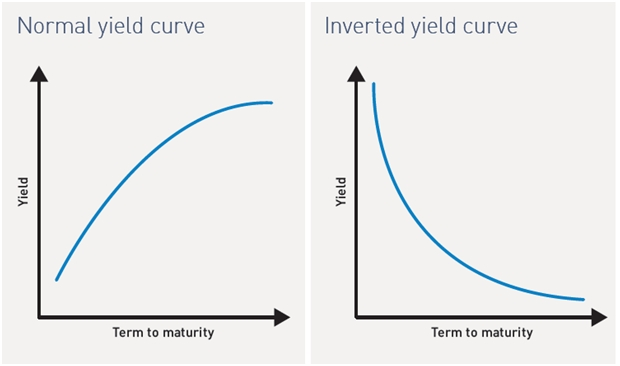
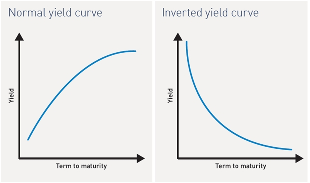
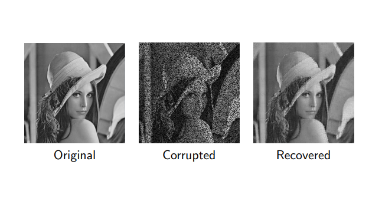
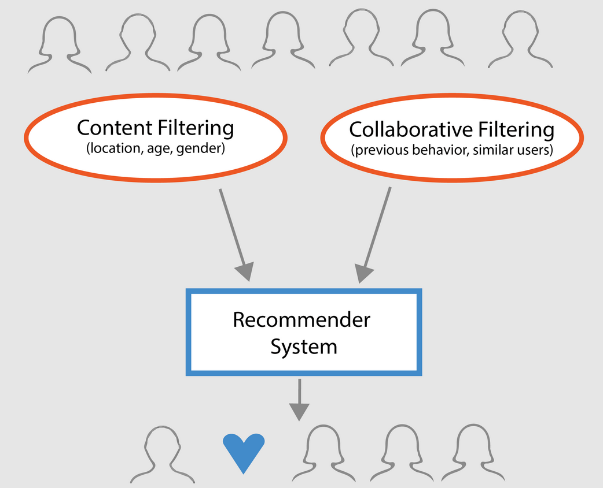
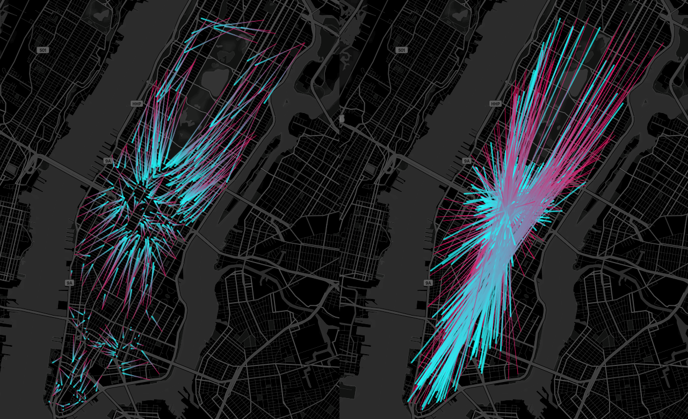

This Analysis uses yields on Treasury bonds at 11 maturities, T = 1, 3, and 6 months and 1, 2, 3, 5, 7, 10, 20, and 30 years. Daily yields were taken from a U.S. Treasury website for the time period January 3, 2006, to May 21, 2021. Throughout this project, I use PCA to analyze the yield curves.

Throughout this project, I implement an imputation method where missing values are replaced by the average of the neighboring observed entries to recover a distorted image

In this project, I create a joke recommendation system using the SoftImpute packagein Python. In the joke.csv data set, several jokes were rated by tens of thousands of users. This data will be used to make predictions on what jokes users will enjoy based on their current preferences and other users with similar preferences.
Handwritten digit recognition is one of the most well-known exercises for studying image classification. In this project, I construct a handwritten digit recognition algorithm using the Tensorflow package in Python.
This project is a Sudoku solver that I created using Excel and OpenSolver

In this project, I create a vehicle routing plan to reduce the transportation costs for a logistics company where the total transportation cost is proportional to the total travel distance. This project was done by creating an optimization model using the Gurobi package in Python.